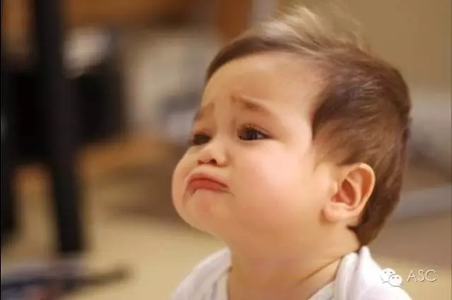
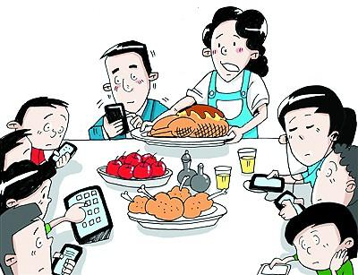
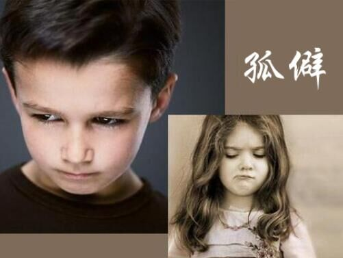

互惠动态
|
|
别在孩子面前做个“低头族”！
《父亲》这首歌是筷子兄弟的王太利为追念去世的父亲而写的，对一个年幼的小朋友来说未免沉重，可七岁的小浩浩为什么选择这首歌呢？
结果孩子回答：
原来，爸爸在家的时候总是在玩手机、打游戏，他找父亲玩，却总是得到父亲头也不抬的一句“没打完，你等一等”
无数次的沮丧让浩浩总结出一个逻辑：
歌词里有这么一句：“多想和从前一样，牵你温暖手掌。”
看到这里，泪流满面啊！

美国一项最新研究显示，父母沉溺手机或许会影响亲子关系。波士顿医疗中心行为儿科学专家珍妮•拉德斯基带领研究小组观察带小孩在快餐店就餐的父母。统计显示，三分之一的父母在进餐过程中不时使用手机；73%的父母进餐过程中至少使用一次手机；超过15%的父母在进餐过程接近尾声时使用手机。

父母在陪伴孩子的时候玩手机其实是一种“冷暴力”，是对孩子感情上的冷漠，当孩子有沟通欲望的时候，父母只顾玩手机，孩子就有被忽略的感觉，甚至认为在父母眼中，自己没有手机重要。为了弥补这种伤害，孩子可能以哭闹、乱砸东西等的方式吸引父母的注意，也可能用玩手机、打游戏等方式来自娱自乐。
“爸爸在外面工作辛苦，可是一回到家就坐在沙发上玩手机、平板电脑，总觉得陪孩子、教育孩子是妈妈的责任。他老不陪孩子，也成了我们经常争执的问题。” 有不少家庭妈妈会这样抱怨，而孩子爸爸回家后觉得累，喜欢坐在沙发上看看电视、玩手机，想放松一下，“怎么喊他陪陪孩子都没用”。
孙岩女士家有1岁的小宝宝。自从家里安上无线网络，孙岩和老公总忍不住打开手机刷微博、玩微信，卧室里、马桶上甚至看电视时也“机”不离手。孙岩说，孩子在边上闹腾，自己觉得无聊，也忍不住抱着手机上网玩，喂着奶她觉得无聊，也总惦记着玩手机，渐渐地，孩子似乎也对手机产生兴趣，看到父母玩手机就爬过去拼命抢，竟然学会了用手指在屏幕上滑来滑去。
孙岩坦称，玩手机时孩子来抢，自己通常会表现得不耐烦，过后想起来挺后悔。其实，父母患手机依赖症对孩子的影响远不止于此。
心理学家认为，在家庭教育中，长期遭受冷漠的孩子容易产生孤僻性格，不愿和别人交流沟通，心理不能健康地发展；孩子也会在潜移默化中变得很冷漠，对他人也是漠不关心，甚至有可能成为冷暴力这个“接力棒”的传递者，尤其是他们在处理自己家庭问题时也可能出现障碍。

“世界上最遥远的距离是，我在你身边，你却在玩手机。”是啊，自己虽然一直陪着孩子，但陪同不等于陪伴，陪伴不仅要有时间，更需要有质量。智能手机确实给我们带来了愉悦与便捷，也大大方便了我们的生活，但也挤走了生活中很多美好的东西。
别以为你一边看手机，一边坐在孩子旁边就是陪孩子了。也不要以为你玩着电脑，嘴上督促一下孩子，就是管孩子了。放下手机，多陪伴孩子，不要让手机成为孩子童年的记忆。

关于互惠，您了解得够多么？
请外国学生来家庭照顾孩子，辅导孩子外语？
只了解这些是不够的！
获取更多信息请参考以下方式：
联系ASC：
电话：86-21-61116069(上海中心）
86-25-66065662（南京中心）
全国家庭均可申请！
手机：15601666586（可加微信）
Q Q：3259637585
微信：asc-center
邮箱：info@asc-center.com
网站：www.asc-aupair.com

感谢您对我们的关注